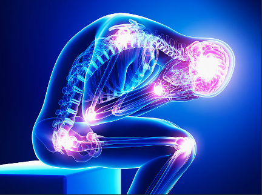
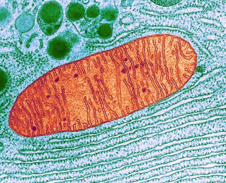
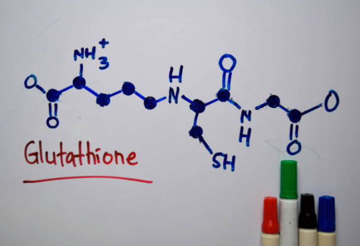

Battling With Fibromyalgia
And how to win

What is Fibromyalgia?
Fibromyalgia is a chronic pain syndrome that attacks the central nervous system, causing constant pain and fatigue in the entire body.
Its primary symptoms include:
- Sharp, intense pain in acute areas of the body (trigger points)
- Generalized pain and muscle spasms throughout the whole body
- Brain Fog
- Constant lack of energy
- Insomnia
- Gastrointestinal problems
- Weakened immune system
It's a hard disease to live with, but there are things you can do to combat it and get your life back!
Treat The Cause, NOT the Symptoms
Many health professionals do not treat the cause of fibromyalgia, but rather the symptoms.
They will usually recommend you take magnesium to relax your muscles,
melatonin for the insomnia, anti-inflammatory diet and medication, ice, rest, and painkillers.
While these things can reduce your symptoms, they are not fixing the root cause of your fibromyalgia
What Actually causes Fibromyalgia?
Too many health professionals ignore one of the main causes of fibromyalgia:
mitochondrial dysfunction.
The mitochondria produces all of the energy used in our body.
If that gets damaged, the cells throughout our whole body will not have the energy they need for all of the important tasks they perform!
This why there are so many symptoms associated with fibromyalgia!
Patients with fibromyalgia consistenly have shown to have damaged mitochondrial cell walls.
These cell walls are destroyed toxins like free radicals.
In various test trials, repairing the mitochondria played a key role in patients' recovery of fibromyalgia!

Supplements for Mitochondria Repair
Phostphatidylcholine is a phospholipid that our body uses to rebuild the cell walls of our mitochondria, reversing the effects of fibromyalgia. It also builds and protect our nerves, and many other functions.
Studies have shown that supplementing with phosphatidylcholine has rebuilt the cell walls of the mitochondria and resulted in the recovery of patients with fibromyalgia!

Glutathione is considered the mother of all antioxidants. Antioxidants protect our cells from being damaged by free radicals.
Several trials have demonstrated that supplementing with glutathione is an effective way of reversing the effects of fibromyalgia!
it is also crucial in buildign a healthy immune system.
Selenium is another important antioxidant in the body.
like glutathione, it also protects our cells from being damaged by free radicals.
Several trials of supplementing with selenium has proven to be successful in reversing the effects of Fibromyalgia!
It also strengtens your immune system and helps in the natural production of glutathione
The symptoms and burden of pain in
patients with both fibromyalgia syndrome (FMS) and chronic widespread musculoskeletal pain (CMP) were reduced for those receiving Vitamin D supplementation,
according to a study published in in Nutrients. Results were particularly significant in those who were vitamin D deficient.